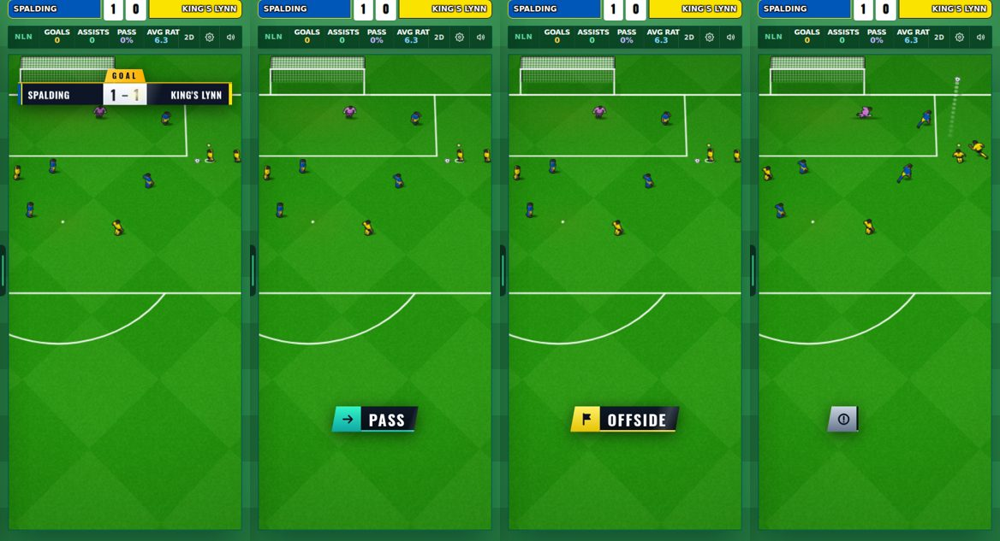
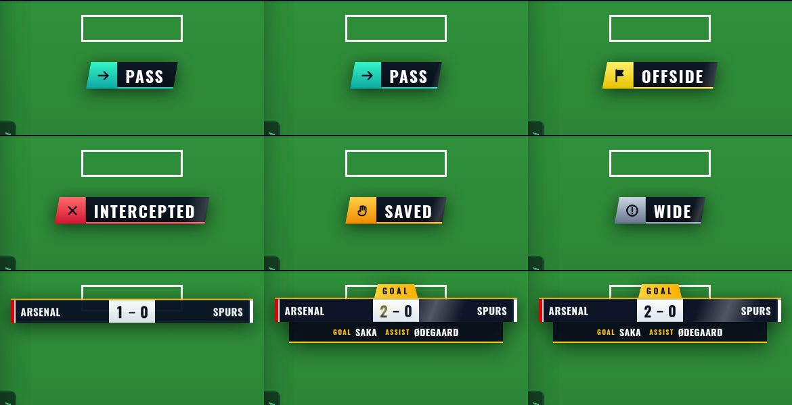

20 October 2026 · branch Mikey · 8 commits · tests: same as before this round, plus a new soak (see the bottom)


Settings → Match, and Settings → Updates. Drawn in code with a TV-style font (Oswald, free licence). Adobe and Blender could not be reached from this session, so no outside art yet. components/star/MikeyPopup.tsx, lib/star/mikeyPopups.ts.
This is a new New | Old row. Harry's 12 Oct rule says new work gets no switch; Mikey asked for this one by name.
| Round | Who joins | Clubs in it |
|---|---|---|
| 3rd Qualifying | NL North, NL South, Step 3 | 56 (32 play, 24 byes) |
| 4th Qualifying | National League | 64 |
| First Round | League One, League Two | 80 |
| Second Round | — | 40 |
| Third Round | Premier League, Championship | 64 |
| Then | — | 32 · 16 · 8 · 4 · 2 |
The 24 byes go to the 12 best of North and of South by last season's finish, never to your club (the next club down takes it). An old save keeps its six-round cup until the season ends. Seen in a real save's data after a season skip: entries 24 / 48 / 44 at the right rounds. The cup screen itself was not opened by the test script.
star_xp_config.sql (XP amounts set by admins; the game uses its built-in amounts until then). It is not in CLAUDE.md's list.